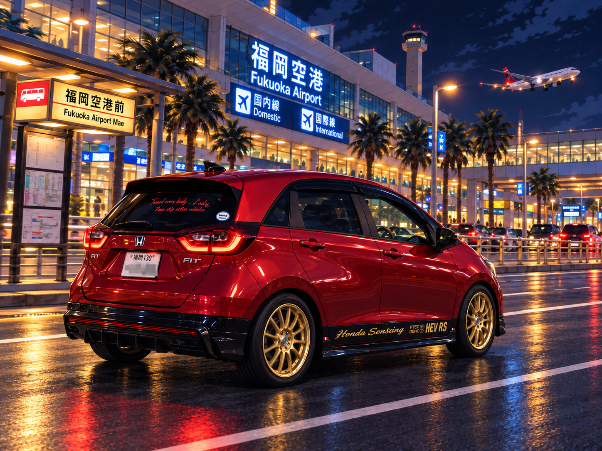
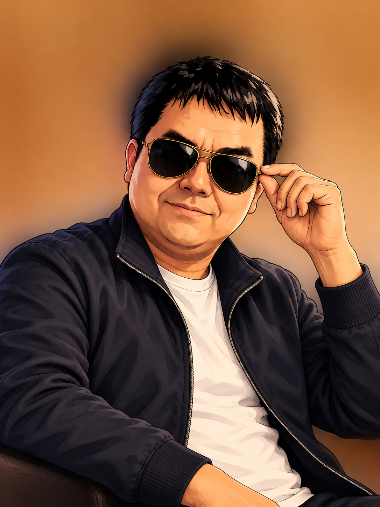
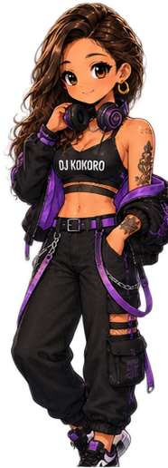

MARIA
0 / 3
AIRPORT CHANCE

14:27
▮▮▮ 5G ▰
‹
✈
Masa
オンライン
☎ ⋮
今日
福岡空港のどこで
待ち合わせますか？
既読 14:12
待ち合わせますか？
✈
地下鉄 3番入口にしようか
14:14
了解しました
既読 14:15
着いたよ。今ここだよ
既読 14:27

✈
そこやね
14:28
✈
もうちょっと待っててね
14:29
うん、待ってます。
気をつけてください
既読 14:31
気をつけてください
＋
メッセージを入力…
➤
送信した写真

あ、車が来た！
✦
✦
✦
✦
✦
✦
✦
✦

REUNION IMPACT

EPISODE COMPLETE
STAGE CLEAR
DUMAGUETE
TICKET 1 / 3
NEXT → CEBU
FINAL
TICKET CHALLENGE
TICKET

現在の全枚数
100
クレジット枚数
50
払い出し枚数
0
クレジット100
差枚±0
G数0
0
0
0
0
0
さあ、勝負の時間だ…
総回転数
0 G